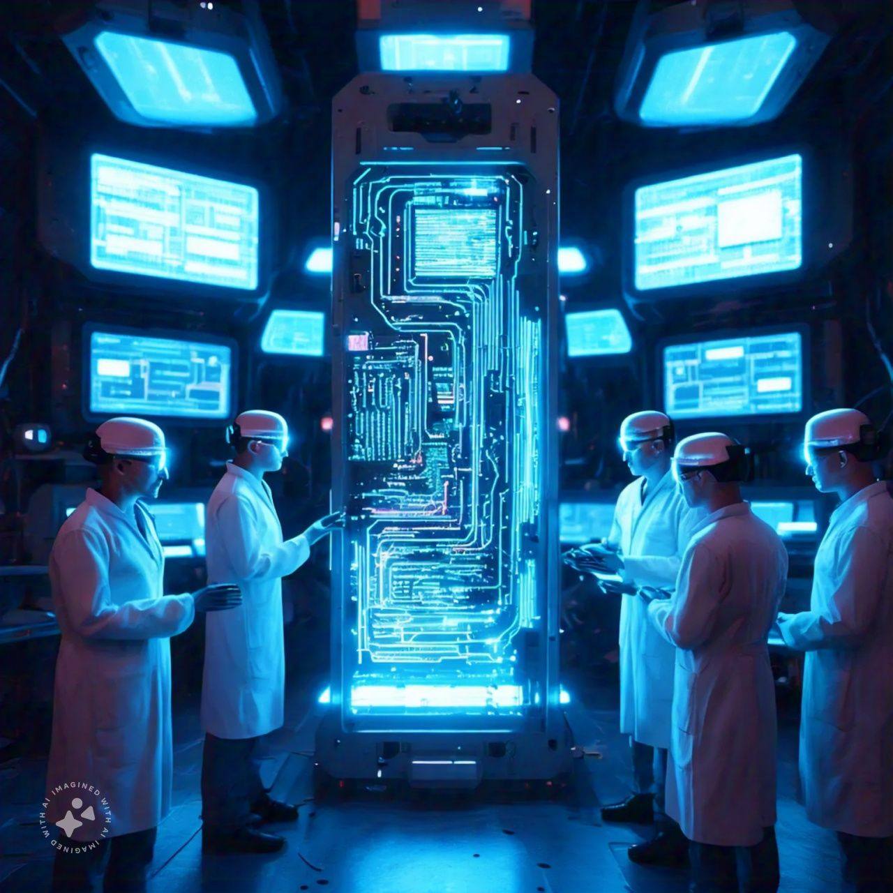

The Future of 5G Technology: Transforming Connectivity
The rollout of 5G technology is set to revolutionize industries and redefine how we connect with the world. With ultra-low latency, faster speeds, and massive device connectivity, 5G is poised to impact healthcare, transportation, and entertainment.
Key Advantages of 5G
- Healthcare: Real-time remote surgeries and telemedicine advancements.
- Smart Cities: Enhanced IoT integration for smart infrastructure.
- Entertainment: Seamless AR/VR experiences and high-definition streaming.
- Transportation: Autonomous vehicles with instant communication networks.
Programming Example: IoT Application with 5G
# Python script for IoT device communication with 5G
import time
from iot_5g_module import IoTDevice
# Initialize IoT device
device = IoTDevice("sensor1", network="5G")
# Stream data in real-time
while True:
data = device.collect_data()
device.send_data_to_cloud(data)
time.sleep(1)
Challenges to Overcome
While 5G promises immense benefits, challenges such as infrastructure deployment, security concerns, and energy efficiency must be addressed.
Further Reading
Explore more about 5G technology: